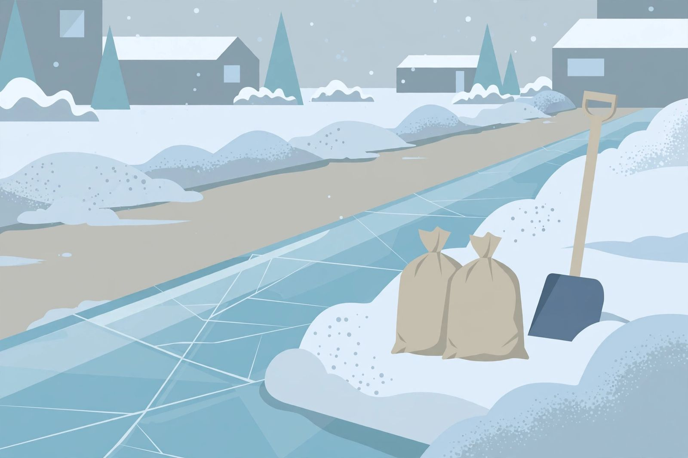

Ice melt by temperature and surface: buy for the coldest night, not the average one

12 degrees Fahrenheit. That is the floor under the cheapest bag on the shelf: rock salt is only effective at melting ice at 12 degrees F or higher, per Kansas State University Extension. A Canadian January spends whole weeks below that line, converted to about minus 11 degrees Celsius, which means the default purchase in most garages is a product rated to stop working during the coldest part of the season it was bought for. Mid November, before the first lasting ice, is the cheapest moment to fix that mismatch.
Difficulty: easy, this is a buying and spreading job, not a repair. Time: one store trip, then minutes per application all winter. Hire a pro line: none for a household walk and drive; a long or steep driveway with repeated ice is a plow and deicing service conversation, not a bigger pile of salt.
The temperature table, extension figures first
Bag labels and roundups publish different floors for the same chemicals, so this table leads with one consistent source: the working temperatures published by Kansas State University Extension, whose horticulture department compared the products homeowners are most likely to meet. Treat every floor, from any source, as approximate. Floors describe pavement temperature, and pavement is not air: a sunny afternoon on a blacktop drive and a shaded concrete walk under trees behave differently at the same thermometer reading.
| Product | Works down to (K-State Extension) | Surface and planting notes |
|---|---|---|
| Calcium chloride | Minus 25 degrees F (about minus 32 degrees C) | Extension first pick: lowest floor, gentle on plants when used as directed |
| Magnesium chloride | 5 degrees F (about minus 15 degrees C) | Generally safe for pets per Extension; harder on concrete than potassium chloride |
| Urea | 15 degrees F (about minus 9 degrees C) | A fertilizer doing double duty; overuse washes nitrogen into plantings and can burn turf |
| Rock salt (sodium chloride) | 12 degrees F (about minus 11 degrees C) | Least expensive; documented damage to unsealed concrete; not recommended on porous concrete |
| Potassium chloride | 20 degrees F (about minus 7 degrees C) | Less concrete damage than magnesium chloride; plant injury if overapplied; corrosive to metal |
| Calcium magnesium acetate (CMA) | 20 degrees F (about minus 7 degrees C) | Contains no chloride; relatively safe on vegetation; works by stopping snow bonding rather than forming a brine |
One behaviour matters more than any single row. A deicer does not fade gently below its floor; it effectively stops melting, and the pellets sit on the ice looking busy while doing nothing. Extra handfuls thrown down in frustration do not restart the chemistry. They just stockpile the chloride that does the surface damage described next.
What each chemical does to concrete, lawn and paws
Nothing on the shelf melts ice by itself. A deicer dissolves into a brine that lowers the freezing point of water, and the brine works under the ice and breaks its bond with the pavement. The damage arrives with the meltwater. Water soaks into the concrete surface, refreezes overnight, and expands. Enough of those cycles pop the top layer off in flakes, a failure called scaling. More product means more brine, more cycles, and more scaling, which is why the amount spread matters as much as the chemical chosen.
Chloride is the shared ingredient in every product on the table except CMA, and chloride carries the environmental cost. The Extension summary, citing its climatologist, notes that calcium and magnesium chloride tend to release less chloride than sodium and potassium chloride. Rock salt runoff is the familiar spring picture: burned lawn edges and damaged shrubs beside the walk, worst where excess product was allowed to wash off the pavement into the beds. On the animal side, Extension rates magnesium chloride as generally safe for pets, and the standing advice for every chloride product is to use the least amount that does the job, because excess is what injures paws, plants and surfaces alike.
Calcium chloride earns its first pick status on two separate grounds: it keeps working far below the other floors, and it gives off heat as it dissolves, which helps it bite into ice quickly on a severe morning. Its counterweight is price, at several times the cost per pound of rock salt. That price gap is exactly what the buying pattern below is built to absorb.
Buy two bags, not one
The average winter day and the coldest winter night are different jobs, and one bag rarely wins both. The pattern that fits a Canadian driveway runs like this:
- The everyday bag covers the ordinary band, roughly the teens and twenties Fahrenheit where most storms land. On concrete worth protecting, CMA or a magnesium chloride product keeps chloride exposure lower. On an asphalt drive with no planting edge to protect, this is the one place rock salt remains a defensible budget pick, used sparingly inside its temperature band.
- The cold snap bag is calcium chloride, bought in November and opened only when pavement temperatures drop below the everyday bag floor. One bag can last seasons at that rate, which is how its higher per pound price stops mattering: it is insurance bought by the pound and spent by the handful.
- Sand rides along free of chemistry. Sand melts nothing. It provides traction on top of ice that has not melted yet, it is safe for surrounding vegetation, and it is the only correct answer for the surface named in the next section.
Use less: the shovel first procedure
- Shovel and scrape first. Extension guidance is blunt: remove as much snow and ice as possible physically before any deicer goes down. Deicer breaks a bond; it was never meant to dissolve a snowfall. Check: bare pavement showing in patches before a single granule is spread.
- Read pavement, not the weather app. Note whether the surface is sunny or shaded, blacktop or concrete. Choose the bag whose floor covers the colder reading. Check: the product in hand is rated below the expected overnight pavement temperature.
- Spread thin and even. A sparse, even scatter over the ice, not drifts in the corners and none in the middle. The brine needs contact, not depth. Check: individual granules visible across the surface, no piles.
- Wait for the bond to break, then clear. Once the brine has undercut the ice, shovel the loosened layer off instead of salting it again. Check: ice lifting in sheets or chunks, pavement reappearing.
- Sweep up leftovers when the surface dries. Residual granules keep cycling chloride into the concrete and wash toward the lawn at the next thaw. A broom pass returns them to the bag. Check: dry pavement with no visible residue along the edges.
What success looks like: a clear walk achieved with the smallest scatter of the right product, no white crust left behind, and a lawn edge that still looks like lawn in April.
The new concrete exception
Every recommendation above stops at one surface. Concrete under a year old gets no deicer at all in its first winter. New concrete is still curing and is more porous than it will become, and both the scaling mechanism and chloride exposure hit it hardest; even the gentler calcium and magnesium chloride products should stay off a curing slab. The first winter kit for new concrete is a good shovel, prompt clearing after each snowfall, and sand for traction on the slick days. It is a short list, and following it is the difference between a driveway that ages normally and one that starts flaking before its first birthday.
— Tom Reilly, Home & DIY Writer